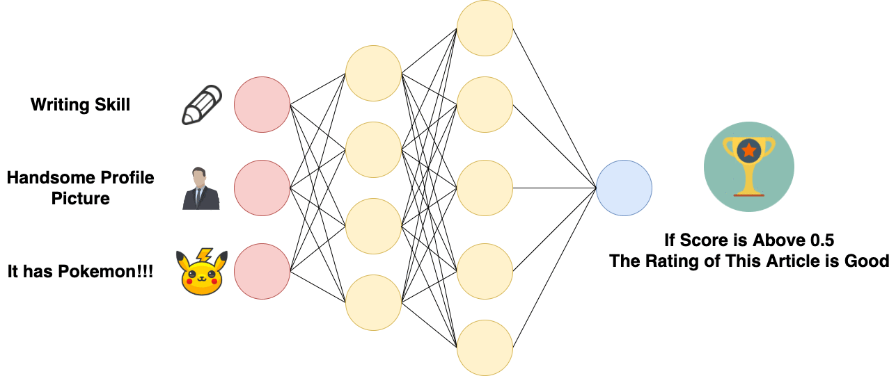
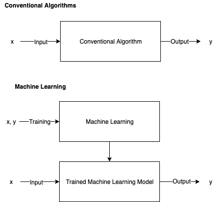
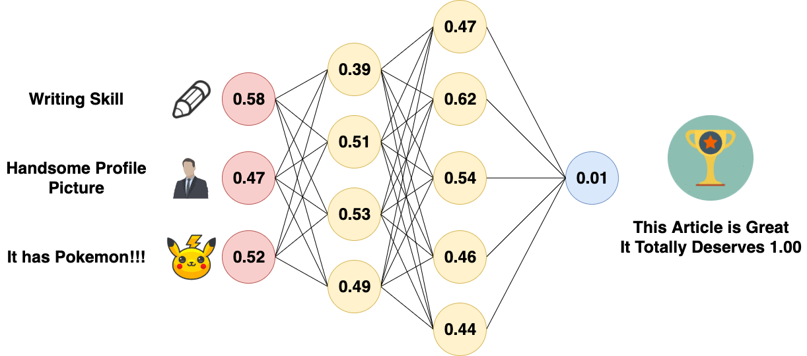
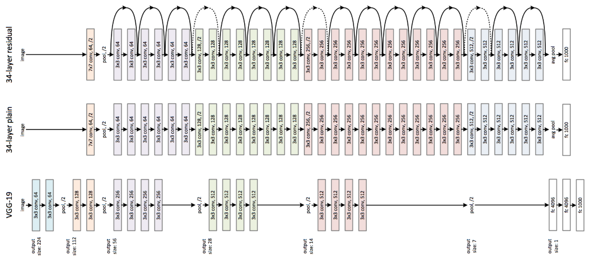
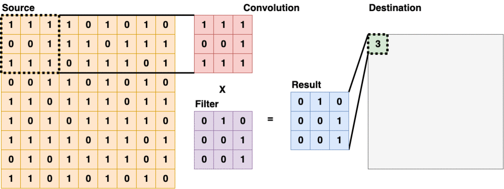
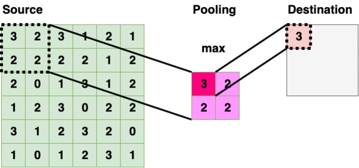
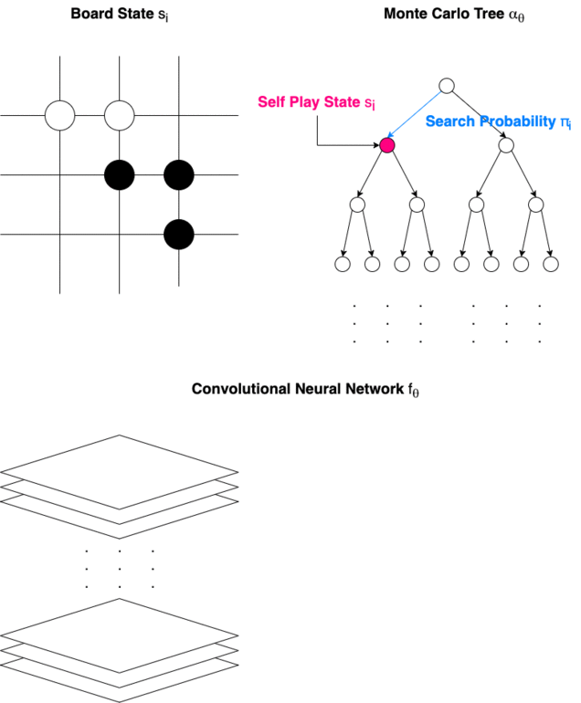

Understanding AlphaGo: how AI thinks and learns (Advanced)

Forward Propagation of Artificial Neural Network
Back Propagation & Cost Functions
Forward Propagation is based on Weights, Biases and the Activation Function, but what determines these values? Activation Function is selected beforehand, but for a large neural network, it would be impossible to manually select the appropriate Weights and Biases.
In the field of Machine Learning, the models are supposed to “learn” from the data on its own, this learning process is also called “training”. Usually, the data is split into 2 different sets — the Training Set and the Test Set. The Training Set is used to “train” the model into a more mature state, and then the performance will be evaluated by the Test Set.

Comparison Between Conventional Algorithms and Machine Learning
There are many different methods to “train” an Artificial Neural Network, but the most popular one is with Back Propagation.
Before Back Propagation, the Weights and Biases of the neural network are usually initialized randomly, in Normal Distribution. The neural network will then perform a Forward Propagation. Since the Weights and Biases are initialized at random, the result of the first Forward Propagation is usually way off. A Cost Function is then used to calculate the difference between the expected result and the output of the neural network. After the difference is calculated, it will be used to adjust the Weight and Biases of the previous layer. The process propagates backward in layers, and thus it is called “Back Propagation”.

Back Propagation of Artificial Neural Network
Here is a more formal tutorial on Back Propagation, as it requires some advanced math to explain. An explanation of Neural Networks and code examples can be found here, where the author uses matrix operations to simulate a neural network in Python.
Back Propagation Explained
Convolutional Neural Network (CNN)
In order to process graphical data with better efficiency, Yann LeCun invented the Convolutional Neural Network in 1994. The network takes count of the spacial information on a 2D array. Convolutional Neural Network is also great for analyzing other 2D data where spacial information matters, which includes a chessboard.
Convolutional Neural Network is constructed with 3 types of layers — Convolutional Layers, Pooling Layers, and Fully Connected Layers. These layers with different shape and sizes will have different performance on different subjects. Research on Convolutional Neural Networks usually involves adjusting those layers and their compositions to optimize performance on target data sets.

Example Architecture of Convolutional Neural Networks
Convolutional Layer (conv)
Convolutional Layer usually appears as the first layer of a Convolutional Neural Network. These types of layers will scan through the source layer with a filter, and put the sum into the destination layer. Some filters are good at detecting edges and some are good in other tasks, more details on different kinds of convolutional filters and their applications in Computer Vision can be found here.

Convolutional Layer (3x3)
Pooling Layer (pool)

Pooling Layer (2x2 — Max Pooling)
Pooling Layer iterate through the source layer and selects a specific value inside the bounded region. The value is typically maximum, minimum, average within the region. Reducing information into a smaller size is also called “downsampling”.
Fully Connected Layer (fc)
Fully Connected Layer is essentially a Multi-layer Perceptron, which is sometimes called “softmax” and essentially does something called “weighted sum”.
Fully Connected Layer is Just an Artificial Neural Network
Convolutional Neural Network is most often used in the field of Computer Vision, which impacts many fields such as eCommerce, FinTech, Game Artificial Intelligence, Cancer Detection, Orthopedics, Psychiatry, WildFire Detection and many more. Here is an article on how Computer Vision is impacting eCommerce and another article on some Cool Frontend Frameworks in Computer Vision.
Alpha Go Zero, Mastering the Game of Go with Machine Learning
“It’s perfect, it’s just flawless, merciless. … I don’t think I could catch up with it in my lifetime.”
— Ke Jie (World Champion in Go) after losing three games to Alpha Go Zero
Congratulations!!! We have come to the point where this article is intended for. Now we will be ready to understand how the legendary Chess and Go AI work from tip to toe.
Design Architecture of Alpha Go Zero
Alpha Go Zero is made of a Convolutional Neural Networks and a Monte Carlo Tree. It is trained in self-play with Reinforcement Learning algorithms.

How Alpha Go Zero Makes a Turn
There are several terms we should get familiar with. Since Medium does not support subscript for most letters, subscripts are represented by letters inside brackets after “_” similar to LaTeX.
State (s): The State of the game is represented by s_(t), from s_(0) to s_(T), where s_(T) is the Terminating State.
Monte Carlo Tree (α): Monte Carlo Tree α_(θ) is used to decide the next State of the game.
Move (a): The Move a_(t) for each State s_(t) is determined by the Search Probability π_(t).
Search Probability (π): The Search Probability π_(t) is used to determine Move a_(t) at State s_(t).
Convolutional Neural Network (f): Convolutional Neural Network f_(θ) is used to output the Value Vector v and Policy Vector p by analyzing the board.
Value Vector (v): Value Vector v_(t) represents the probability of the current player winning in position s_(t)
Policy Scalar (p): Policy Scalar p_(t) represents probability distribution over moves.
Winner (z): Winner z is propagated back to train the model.
Alpha Go Zero is trained entirely through self-play and only uses 1 Convolutional Neural Network, different from the original Alpha Go which requires 2 Convolutional Neural Networks and borrows information from professional human play.
Alpha Go Zero takes the game board as raw input to the Convolutional Neural Network. The network then outputs a vector v and a scalar p. Monte Carlo Tree is then used to compute the Search Probability π, which is used to determine the move for the next stage of the game. In the end, a winner z is determined by the rule of the game and is used to train the model with reinforcement learning.
And by now we have just learned how Alpha Go Zero works!!! More importantly, we have stepped into the world of Artificial Intelligence.
Artificial Intelligence, The Present, and The Future
“Mark my words — A.I. is far more dangerous than nukes”
— Elon Musk, CEO of Tesla & Space X, Co-founder of OpenAI, and many more…
Our research in Artificial Intelligence is in an interesting state. Before Machine Learning all the AI are hard-coded to behave the way we expect them to. Machine Learning allows the AI to improve themself independently and sometimes yields unexpected behaviors. Researchers have observed gradually increasing intelligent behaviors in AI Agents by putting them into environments and reward them with certain rules. This can be fascinating while scary to think about.
Open AI Multi-Agent Hide and Seek, Agents, Learned to Behave Intelligently Under Evolutionary Algorithm
Researches inside game environments are like math and physics. By itself, such research may be only curious to know about and fun to try out, but lacks any solid values. However, they will provide a necessary foundation for other, more applied science and engineering. The future is in the hands of you and I, together we will make tomorrow a better place.